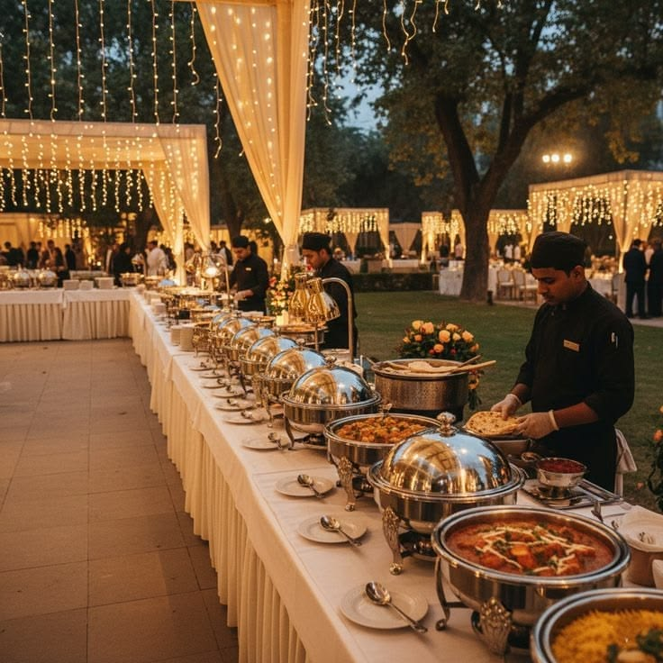
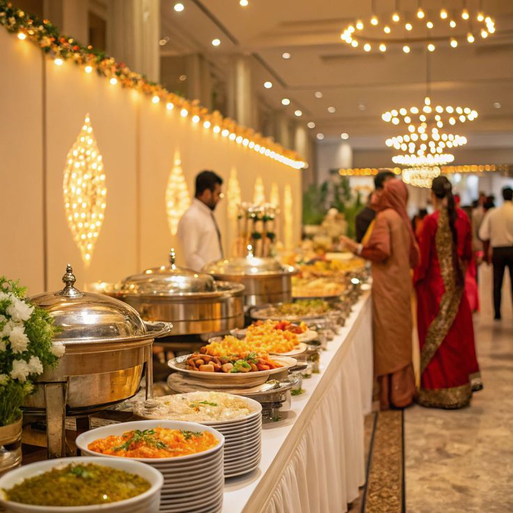
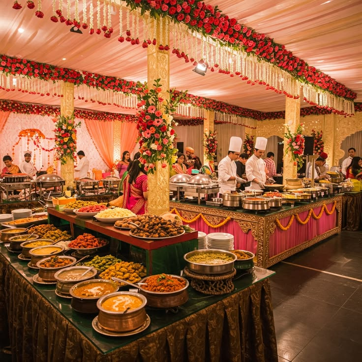
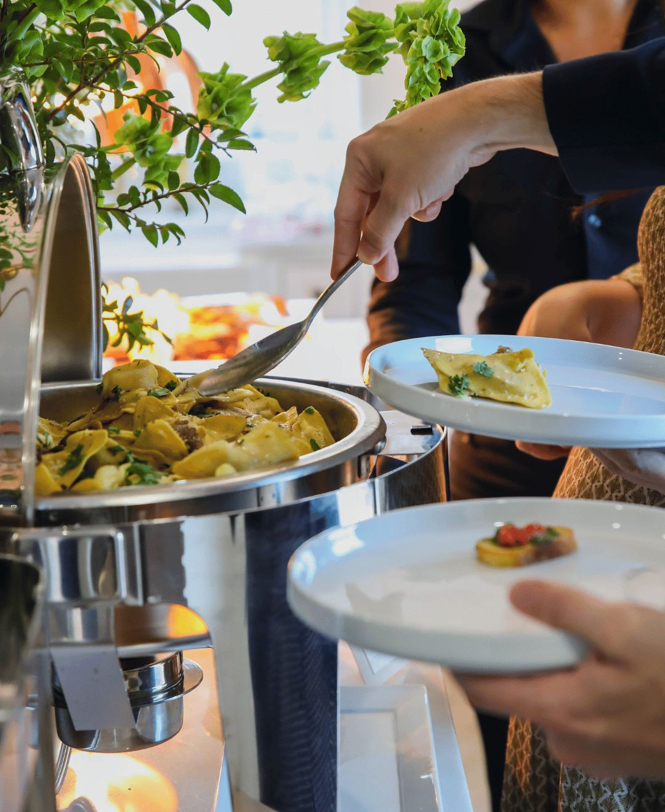

Brunch
Daytime refresh
Bright brunch bowls, warm breads and seasonal fruit.
Every concept is built on a live market selection and a simple idea: food should feel beautiful, generous and easy to enjoy.

Bright brunch bowls, warm breads and seasonal fruit.

Shared dishes, plated mains and a table full of color.

Comforting warm plates and a sweet finish that feels intimate.
Dosa, chaat and grill counters create a lively moment between courses.
Traditional desserts, plated pastries and late-night coffee stations.
Explore our clear starting packages, then customise every detail.
View packagesYes. We begin with your event, guest mix and service style, then shape the menu around it.
Absolutely. Dietary requirements are planned into the menu from the start.
Yes. Once we understand your event, we can schedule a guided tasting session.
We create menus that feel generous, accessible and uniquely suited to your event.
